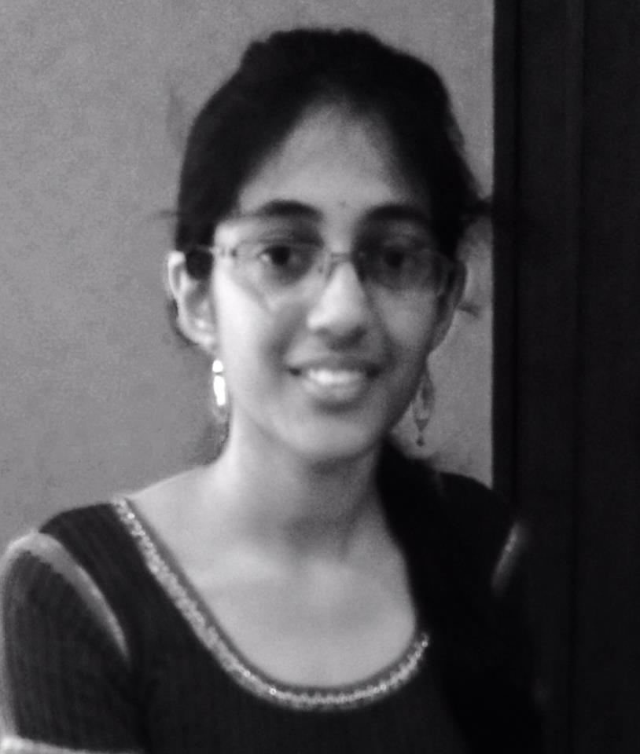
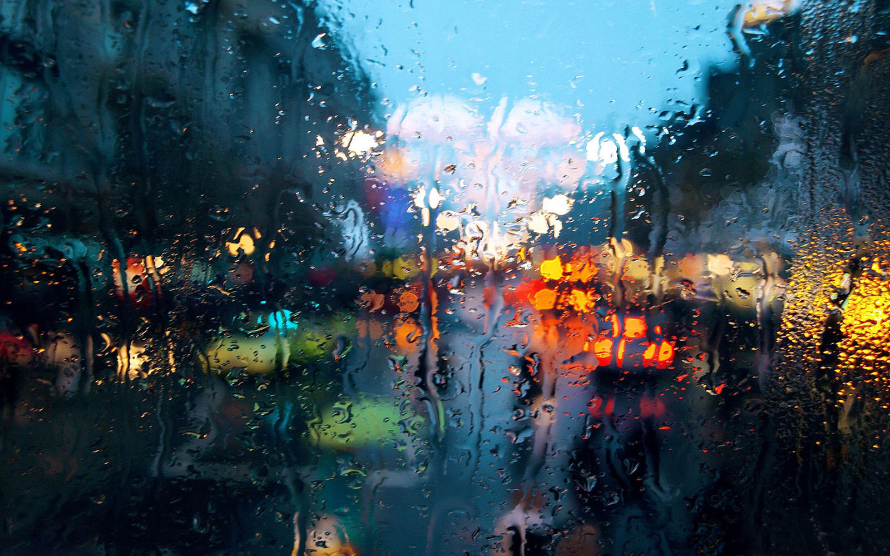

 My journey into this world started on 24th December 1996. I was graced with the name Manasa, which is roughly translated to mean mind or intelligence in English. I am the eldest child of two. I was fortunate enough to be blessed with an amazing little brother who quickly became the most important person in my life. My life revolves mainly around 3 important things - family, friends and academics. Needless to say I love my family very much and could not possibly imagine where I would be without them. Any and all of my successes can directly be credited to their helping hand and supportive nature. My friends on the other hand balance out my life with a bit of fun, and make sure I keep myself firmly on the ground, without letting my head wander in the clouds as it is so often prone to do if not consciously stopped. My education is also one of the things most important to me, as I firmly believe that only good education can lead to a good future. To find out more about my brain's inner workings, keep browsing through the website!
